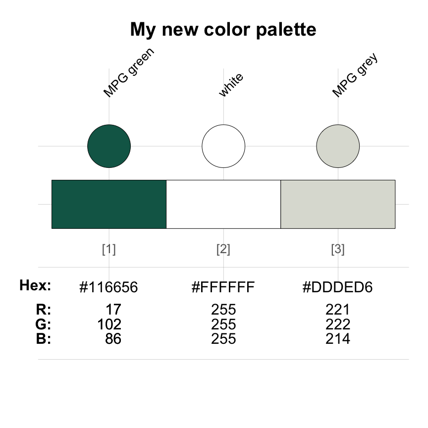
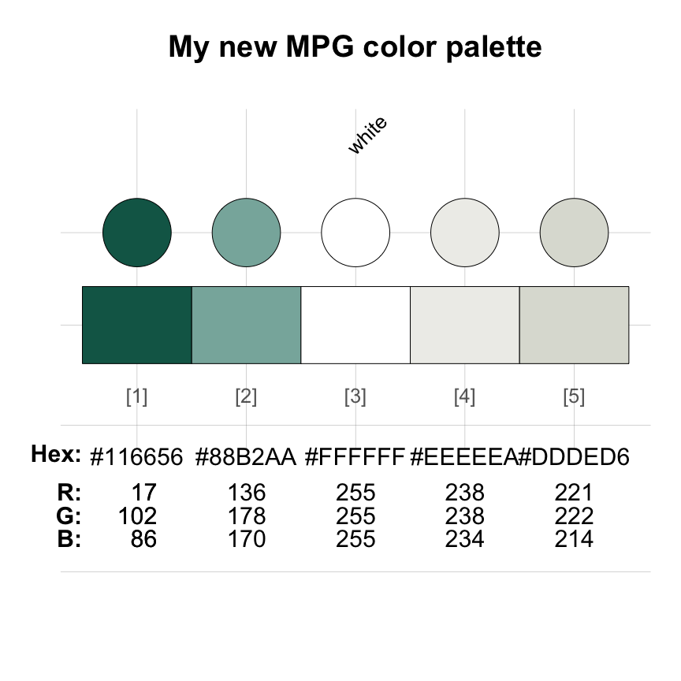
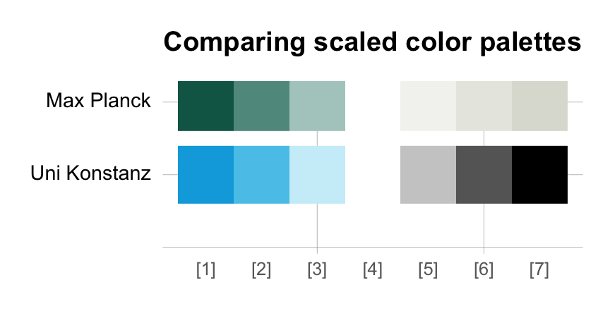

The color palettes included in the unikn package are based on the CD manual of the University of Konstanz. However, the functionality provided by the package makes it easy and straightforward to define and use your own colors.
Version 0.8.0 of unikn (released in 2023-01-06) contained 52 additional color palettes from other institutions (mostly universities).
As the number of color palettes has been growing beyond the scope of this package, the color palettes from other institutions are now being collected in a separate R package unicol.
Installing unicol currently provides access to a diverse range of over 200 color palettes from over 80 institutions.
The rest of this vignette explains how the color-related tools of unikn can be used for creating new color palettes. If you do so, please consider submitting it to be included in future versions of the unicol package. (For a general introduction of the unikn colors, color palettes, and color functions, see the vignettes on Colors and color functions and Color recipes. The vignette on Text boxes and decorations provides information on plotting slides and text elements.)
We install or load the unikn package to get started:
Creating new color palettes
A color palette is an ordered collection of color objects. Creating new color palettes in R is simple and only requires two steps:
Define the palette’s elementary colors as R objects.
Combine colors into a color palette.
In the following, we illustrate both steps. As we will see, Step 1 can either be omitted (when the to-be-combined colors exist as R objects) or can be included in Step 2.
As an example, we will re-create the color palette of the German Max Planck Society (which
unikn used to export as mpg_pal, but see
mpg of the unicol package) from the color
definitions in its Corporate Design manual (available here).
1. Defining colors
Before we can a create new color palette in R, its elementary colors need to exist as R objects. (If all colors to-be-combined into a new palette exist as R objects, we can skip this step and directly proceed to 2. Combining colors into a palette.) Defining new colors in R requires a basic understanding of their underlying representation.
How colors are represented and perceived is a wide-ranging topic that has fascinated scholars and practitioners for centuries. Essentially, there are many alternative ways to analyze or synthesize colors, and the most appropriate representational way depends on the specific context of a particular use case (see Wikipedia: Color model for an introduction).
In R, the grDevices package (included in any default installation) provides colors and color-related functions. Although R supports many color models (including HCL, HSV, Lab, Luv, and RGB variants), the three most common ways of expressing colors in R are:
by R color name: R includes 657 named colors, whose names are provided (as a character vector) by evaluating the
colors()function of grDevices.by RGB values: Every color (or hue) is expressed by a triple of numeric values on three dimensions that denote the additive primary colors (red, green, blue). The range of values is either expressed on a scale from 0 to 1, or — more typically — on a scale from 0 to 255 (i.e., on an 8 bit scale allowing for different values).
by HEX values: Every color (or hue) is expressed by a character string (with the prefix
#), followed by a triple of hexadecimal values (each ranging from00toFF) that correspond to the triple of decimal RGB values (in the range from 0 to 255).
Importantly, the same color (or hue) can be denoted by its name, its RGB values, and its HEX values. Thus, the three different systems (i.e., color name, RGB values, or HEX values) can be alternative representations of the same object. However, just as the properties of an alphabet or numeral notation system constraints the words or numbers that can be expressed by it, the universe of possible colors is limited by their representation. For instance, whereas the RGB and HEX systems usually distinguish between more than 16 million (i.e., ) possible colors, only a limited number of them are named. Similarly, when multiple names refer to the same triple of RGB or HEX values, they denote the same color.1
An example helps clarifying these abstract terms. When viewing an
existing color or color palette with the seecol() function
of unikn, the name, HEX and RGB values of the
individual colors are being shown. For instance, the following color
palette mpg_pal provides the colors of the Max Planck Society:
As the middle color of mpg_pal is one of the 657 named
colors of colors(), R will recognize it as a color when we
type its name (as a character object "white") in a context
that expects color inputs. However, the two other colors of
mpg_pal have specifically been defined by the Max Planck Society and thus are
not pre-defined colors of R (i.e., not contained in
colors()). To use such colors in R, we first need to define
them as color objects.
So how can we define new colors in R? Most institutions will provide definitions of their corporate colors or instructions how they can be defined in some standard color system. Unfortunately, some definitions (such as those using the subtractive CMYK model) are aimed at printing (as opposed to computer screens) and other standards (such as numeric PANTONE™ PMS codes) are proprietary. But as most institutions have an interest in widely disseminating their colors, they typically include translations or approximations for alternative color models in their definitions.

The Max Planck Society defines two main colors in its CD manual (available here):
A dark shade of green is defined as Pantone 328, and approximated by CMYK 100/0/57/30 or RGB 17/102/86.
A light shade of grey is Pantone 427, and approximated by CMYK 0/0/6/15 or RGB 221/222/214.
In the following, we will first use the RGB values to define both colors (as these are provided in the definition). However, we then show that we alternatively could have used the colors’ HEX values (had they been provided) to define the same color objects.
Defining colors from their RGB values
As our two colors of interest are given in RGB values, we can use the
rgb() function of the grDevices package to
define corresponding objects:
mpg_green <- grDevices::rgb( 17, 102, 86, maxColorValue = 255)
mpg_grey <- grDevices::rgb(221, 222, 214, maxColorValue = 255)The first three arguments specify values on the red,
green, and blue dimension, respectively.
Importantly, the values must be in the
range ,
where
is provided by maxColorValue = 255. Whereas the sRGB standard expresses
all values in a normalized range
of ,
most color definitions use the traditional 8-bit representation that
distinguish between
levels
in the
range .
The rgb() function additionally allows for
adding names and a transparency level alpha,
but as we can modify these aspects later, we do not need to use them at
this point.
What do we obtain when we evaluate our new color objects? Let’s see:
mpg_green
#> [1] "#116656"
mpg_grey
#> [1] "#DDDED6"When evaluating an object created by rgb(), R returns a
character sequence of the form "#rrggbb". In this string,
the sequence rrggbb expresses the three RGB values (for the
red, green, and blue dimension,
respectively) in hexadecimal (HEX) notation (in the range
).
In HEX notation, the ten numeral symbols (i.e., the digits from 0 to 9)
or the decimal system are extended by the first six letters of the
alphabet (i.e., A to F) to turn our familiar base-10 notation into an
analogous place-value notation with a base of 16. Thus, the HEX values
of "#116656" is merely a more compact way of expressing
-
red: -
green: -
blue:
Thus, the HEX values "#116656" provide an alternative
way of expressing the RGB values 17/102/86 — and both refer to the color
“MPG green” (shown as mpg_pal[1] above).
Defining colors from their HEX values
The equivalence of the RGB and HEX notations can be illustrated by defining the same colors a second time, but this time specifying their HEX values (returned above):
mpg_green_2 <- "#116656"
mpg_grey_2 <- "#DDDED6"If both definitions really yield identical R objects, the following
checks must evaluate to TRUE:
Thus, we can define colors from both their RGB or HEX values — and the two notations are really just two alternative ways of representing the same colors.
2. Combining colors into a palette
Having defined two new colors, we can easily combine them into a new color palette. A color palette is simply a sequence of colors that are stored in some sequential data structure. The two simplest data structures in R that are suited for this purpose are vectors or data frames. Thus, the following two expressions both define valid color palettes:
c(mpg_green, mpg_grey)
#> [1] "#116656" "#DDDED6"
data.frame(mpg_green, mpg_grey)
#> mpg_green mpg_grey
#> 1 #116656 #DDDED6As it often is easier to remember and access colors by their names,
it usually makes sense to name the elements of a color palette (e.g., by
using the name() function).
The newpal() function of unikn provides
a convenient wrapper for defining color palettes. Its main argument
col uses a vector of color objects that make up the new
palette, whereas names and as_df allow
specifying color names and switching between returning the new palette
as a vector or data base.
Importantly, the color objects of col can be provided as
RGB values, as R color names, or as HEX values:
mpg_pal_3 <- newpal(col = c(rgb( 17, 102, 86, maxColorValue = 255), "white", "#DDDED6"),
names = c("MPG green", "white", "MPG grey"),
as_df = FALSE)The new color palette mpg_pal_3 contains the three basic
colors of mpg_pal (shown above):
seecol(mpg_pal_3,
main = "My new color palette", col_brd = "black", lwd_brd = .5)
The 5-color palette provided as mpg_pal includes two
intermediate colors (at positions mpg_pal[2] and
mpg_pal[4]) that are extrapolated by mixing the two main
MPG colors with “white” in a balanced (50:50) fashion. The
usecol() function of unikn automatically
performs these extrapolations when extending a 3-element color palette
(e.g., mpg_pal_3) to n = 5 colors:
my_mpg_pal <- usecol(mpg_pal_3, n = 5)The resulting color palette my_mpg_pal recreates the
colors of the unikn color palette mpg_pal
(shown above):
seecol(my_mpg_pal, main = "My new MPG color palette",
col_brd = "black", lwd_brd = .5)
Technically, the two color palettes differ in some names and the way
in which its middle color (“white”) was specified (by its R color name
or HEX values). However, when using col2rgb() for
converting both palettes into their RGB values, we see that they contain
the same colors:
all.equal(col2rgb(mpg_pal), col2rgb(my_mpg_pal), check.attributes = FALSE)
#> [1] "Numeric: lengths (9, 15) differ"This concludes our illustration of defining a new colors and color palettes.
Comparing color palettes
Once a new palette has been defined (and is available in your current
R environment), the seecol() and usecol()
functions allow comparing, scaling, and using them in the same fashion
as the native unikn color palettes:
# Scaled palettes:
seecol(list(mpg_pal, pal_unikn), n = 7,
pal_names = c("Max Planck", "Uni Konstanz"),
main = "Comparing scaled color palettes")
See the vignette on Color recipes for additional examples of using unikn functions for solving color-related tasks.
Call for contributions
We are still expanding the range of color palettes from other institutions in a dedicated R package unicol.
Collecting color palettes
- Are you using the unikn color functions to create your own color palettes?
If so, please let us know (e.g., by posting on this GitHub issue)!
We collect color palettes from other institutions to make them available to R users in future versions of unicol.
To enable us to verify and provide credit to your contributions, please send us the following information:
- your code (e.g., the
newpal()command creating your color palette),
- your reference or source information (e.g., some URL with color
definitions),
- your name and some contact information (e.g., an Email address).
We’re looking forward to your inputs and contributions (at this GitHub issue)!
Resources
The following versions of unikn and corresponding resources are currently available:
| Type: | Version: | URL: |
|---|---|---|
| A. unikn (R package): | Release version | https://CRAN.R-project.org/package=unikn |
| Development version | https://github.com/hneth/unikn/ | |
| B. Online documentation: | Release version | https://hneth.github.io/unikn/ |
| Development version | https://hneth.github.io/unikn/dev/ |
Vignettes
The following vignettes provide instructions and examples for using the unikn colors, color palettes, and functions:
| Nr. | Vignette | Content |
|---|---|---|
| 1. | Colors | Colors and color functions |
| 2. | Color recipes | Recipes for color-related tasks |
| 3. | Institutional colors | Creating color palettes for other institutions |
| 4. | Text | Text boxes and decorations |